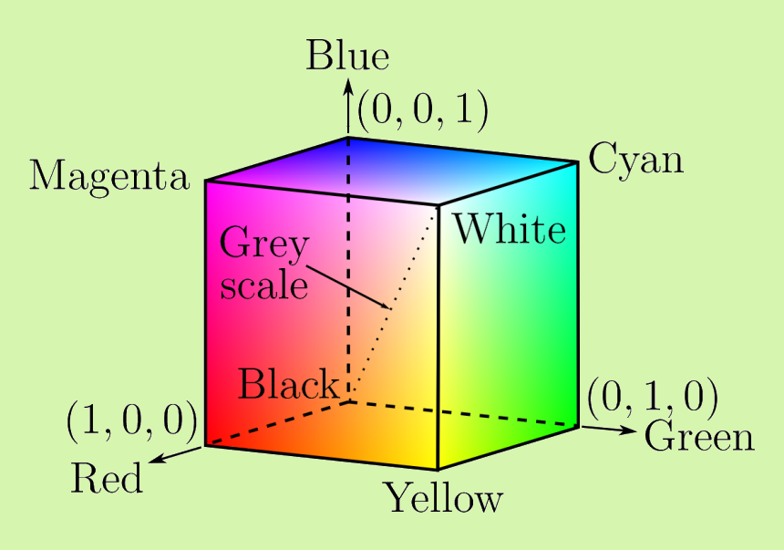
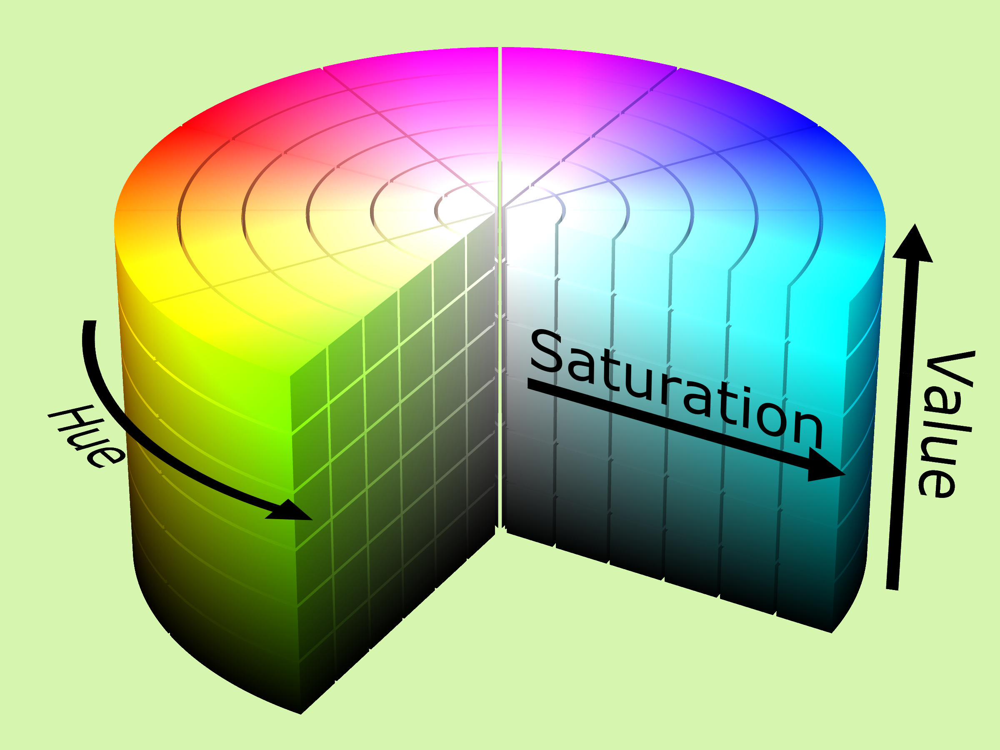
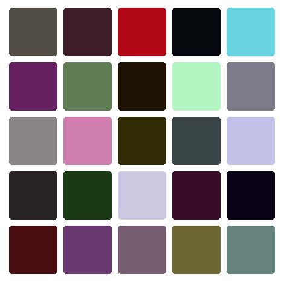
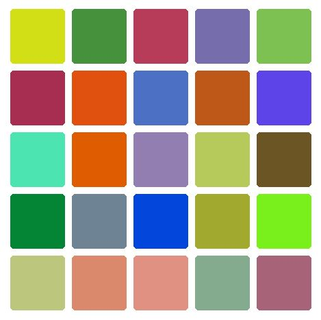

Color Spaces and Even Color Spacing
< ( In Progress )
Hello! Hope everyone had a wonderful winter break.
I've finally wrapped up all my grad school applications and I've been able to spend some time learning React and thinking about a problem I encountered while making a game this past semester. The problem arose when I needed to come up with a bunch of unique random colors for objects in the game. It reminded me of Bertrand's Paradox in that depending on which color model we use to represent our colors, the amount of randomness in the results could vary widely.
Introduction to Color Science
Color science is the study of human perception of colors. In displaying colors on machines such as computer monitors, tv screens, and our phones, it can be very useful to have a mathematical description of colors. Color science gives us the idea of a color space, which is exactly the sort of mathematical model we want for this. Some common models you may be familiar with are RGB, HSV, and CMYK which describe colors as points in three or four dimensional space.


Visualizations of the RGB and HSV color models respectively
Generating Colors
Say we want a set of random colors to distinctively label some objects. Our first approach might just be choosing to use the standard HSV color model for artists and uniformly picking values for each of hue, saturation, and value. Doing this gives us the following:

Random colors created by uniformly sampling each of the hue, saturation, and value coordinates
This wasn't so great, a lot of the colors end up looking fairly similar which is exactly what we don't want to happen. The reason for this is that certain regions of the HSV color space have a lot of similarities. For example, if the value (brightness) is low, all of the colors will end up looking black, or if the saturation is low, all of the colors will look gray despite them having uniformly random hues.
Maybe if we use the RGB color model, we can get some better results:

Random colors created by uniformly sampling each of the red, green, and blue coordinates
This gave us significantly better results! This is where we can see the resemblance of our problem to Bertrand's Paradox. The randomness of our colors depends on the coordinate system to select them. The RGB colors are good, but there are still quite a few of them that are too close to one another. This begs the questions: what is the best space to use when generating colors?
The CIE L*a*b Color Space
One of the issues with the RGB and HSV models is that they are not perceptually uniform. That is, the euclidean distance between color differences in these spaces isn't necessarily proportional with our perceived distance between the colors.
Resources
- I Want Hue (A project I found that does something very similar to this)
- A Great Video on the CIE Color Spaces